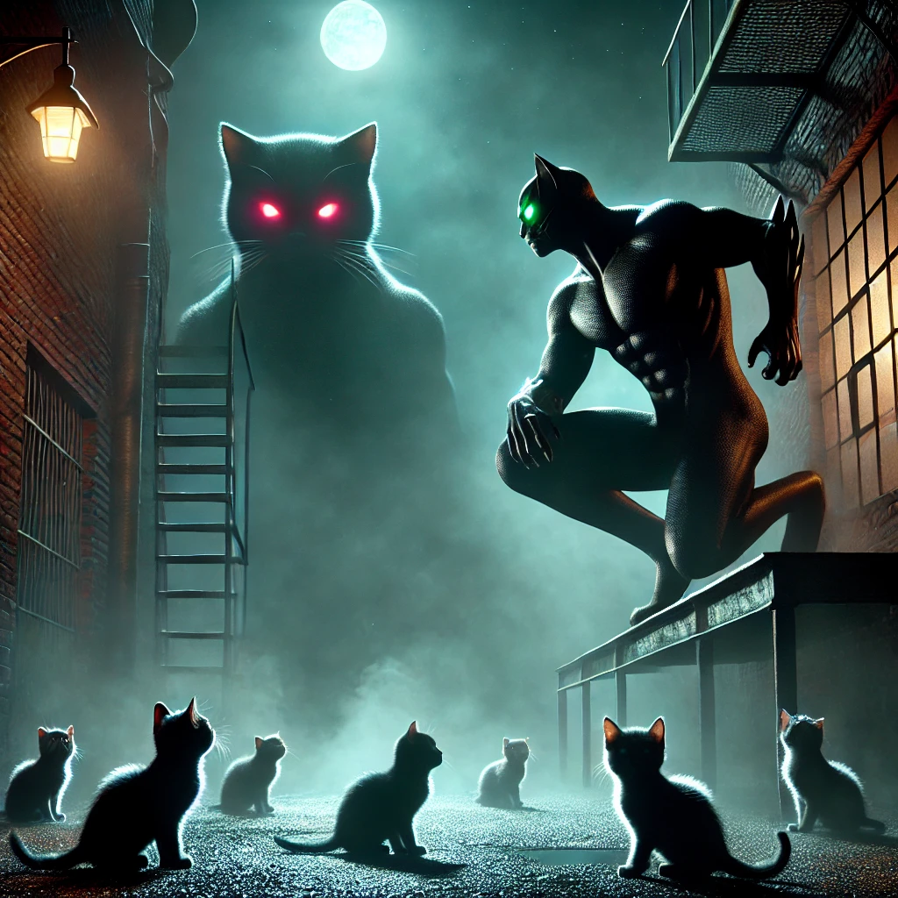

W mrocznych zakamarkach miasta, gdzie noc jest wieczna, a zagrożenia czają się w każdym cieniu, działa nieznany obrońca. Nazywany Mrocznym Kocurem, ten tajemniczy superbohater ratuje małe, bezbronne kotki przed okropnym losem. Jednak jego metody i pochodzenie budzą więcej pytań niż odpowiedzi. Kim naprawdę jest ten koci heros i jaką mroczną mocą dysponuje? Jego historia, owiana strachem i mrokiem, może przerażać nie mniej niż potwory, z którymi walczy.
Ostatnio miasto obiegły wieści o serii zaginięć kociąt. Małe, bezradne zwierzęta znikały bez śladu, a ich właściciele nie potrafili wyjaśnić, co mogło się z nimi stać. To właśnie wtedy pojawił się Mroczny Kocur - samotny bohater, który ruszył na ratunek, śledząc tajemnicze siły kryjące się w opuszczonych fabrykach i podziemiach miasta. Jego misją było pokonanie Żelaznego Pazura - potwornego kota, będącego produktem mrocznych eksperymentów. Ten gigantyczny, zniekształcony stwór terroryzował zwierzęta, a jego brutalność wzbudzała trwogę wśród mieszkańców. Jak relacjonują świadkowie, starcie między bohaterem a Żelaznym Pazurem było pełne przemocy i chaosu, gdy Mroczny Kocur zmierzył się z przeciwnikiem, który przerastał go siłą i rozmiarem.
Choć Mroczny Kocur zdołał ocalić przerażone kocięta, koszt tego zwycięstwa pozostaje nieznany. Źródła bliskie sprawie mówią, że jego nadzwyczajne moce pochodzą z klątwy, która powoli go niszczy. Niektórzy twierdzą, że za każdym razem, gdy korzysta ze swoich mocy, coraz bardziej staje się częścią tej ciemności, którą próbuje pokonać. Czy Mroczny Kocur jest prawdziwym bohaterem, czy też sam zmieni się w potwora, z którym kiedyś walczył? Na razie jedno jest pewne - małe kotki w mieście mogą spać spokojnie, choć cena za ich bezpieczeństwo może okazać się bardzo wysoka.
